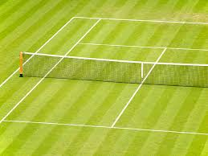
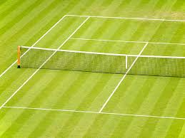
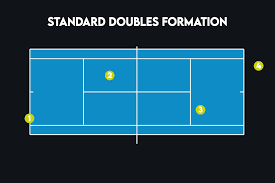

🎯 Game Rules
.jpeg)
Tennis is unique in its scoring and match structure. A game starts at "love" (zero) and progresses through points — 15, 30, 40 — until a player wins the game. When both players reach 40, the score is called “deuce,” and a player must secure a two-point advantage to win that game. Sets typically consist of six or more games, and matches are usually decided in a best-of-three or best-of-five format.
Other key rules include the requirement for the ball to land within the boundaries of the court, and in doubles, communication and positioning add further complexity.
🎾 How to Play
.jpeg)
Mastering tennis starts with learning fundamental techniques. The serve is the first stroke of every point. Toss the ball with a controlled motion and hit it at the peak of your swing with a consistent follow-through. Once the point begins, players use forehand and backhand strokes to return the ball.
Understanding when to play aggressively versus defensively is crucial. Drills, repetition, and coaching feedback are recommended to improve consistency.
🏟️ Court Types
.jpeg)
.jpeg) 

Court surfaces greatly affect playing style. Hard courts deliver a consistent bounce, clay slows the game with higher friction, and grass courts offer a faster pace with unpredictable bounces.
🎒 Equipment

🏸Tennis Rackets
Engineered for power and control, modern tennis rackets use graphite and composites, offering durability and customization.
🎾Tennis Balls
High-quality tennis balls deliver consistent bounce and durability, available in both pressurized and non-pressurized options.
👟Tennis Shoes
Designed for grip and stability, proper tennis shoes offer lateral support and cushioning to prevent injuries.
.jpeg)
👕 Tennis Clothing
Breathable and lightweight clothing enhances mobility and comfort. Most apparel features moisture-wicking materials to keep players dry during intense matches.
📈 Strategies
Excelling in tennis requires technical skill and smart strategy. In singles, effective baseline play and shot placement are key, while doubles emphasize teamwork and net coordination.
Observe professional matches to learn how strategies adapt during in-game situations. Experiment with pace, spin, and shot selection for continuous improvement.
Mental fortitude is equally important—staying focused under pressure can turn the tide of a match. Players often develop rituals or routines between points to manage nerves and maintain concentration.
Court awareness, footwork, and anticipation help players position themselves optimally. Reading an opponent's body language and predicting shot direction can provide a significant edge.
Advanced strategies involve mixing up shot depth and speed, using drop shots, lobs, and angled volleys to disrupt the opponent’s rhythm. Understanding your own strengths—and your opponent's weaknesses— allows you to tailor tactics effectively.
Finally, strategic stamina is critical. Even the best tactics won’t work without the endurance to sustain them over long matches. Players incorporate fitness routines, stretching, and recovery practices into their training to ensure peak performance when it matters most.